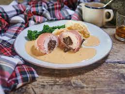

Chicken Balmoral

Description
Chicken Balmoral is a delicious Scottish dish that combines tender chicken breasts with a flavourful stuffing of haggis and wrapped in smoky bacon.
Ingredients
- 2 large chicken breasts
- 70-100g haggis, depending on the size of the chicken breasts
- 4 rashers of bacon
- Vegetables of your choice to serve with – we recommend neeps and tatties!
- Peppercorn or whiskey sauce
Steps
- Turn the oven on to 200C (400F) and then start by cooking the haggis. You’ll find that most haggis comes in a log form. It can be baked in the oven in its casing, or opened and sliced to cook in the microwave. We find it easiest to buy a small haggis and then open it and cook how much we needed in the microwave, leaving the rest for another meal or freezing it. Set aside to cool.
- Take the chicken breasts and make a slit in the side at the largest point, slicing through until about 1cm is left on the opposite side.
- Take the cooked haggis and stuff half into each chicken breast. You don’t want them to be too full, as the chicken should basically seal back around the haggis to form a circle of chicken with the haggis at the centre.
- Lay the bacon out and then place the chicken breast on one end, rolling it to cover the centre and seal the slit. Ideally, the ends of the bacon will be on the underside of the chicken. If you really need to you can secure it with a toothpick but it should stick fairly well to the chicken itself.
- Fry the wrapped chicken breasts so that the bacon browns a little and starts to crisp a bit.
- Put them into a pan or on a baking tray and bake in the oven for around 30-40 minutes depending on the size of the chicken breasts. The juices should run clear when you insert a sharp knife.
- Meanwhile, cook any accompanying vegetables and sauce of your choice
- To serve, slice the chicken breast in half so you can see the haggis inside, place on the plate with the vegetables and liberally pour over whisky sauce!
- Enjoy!